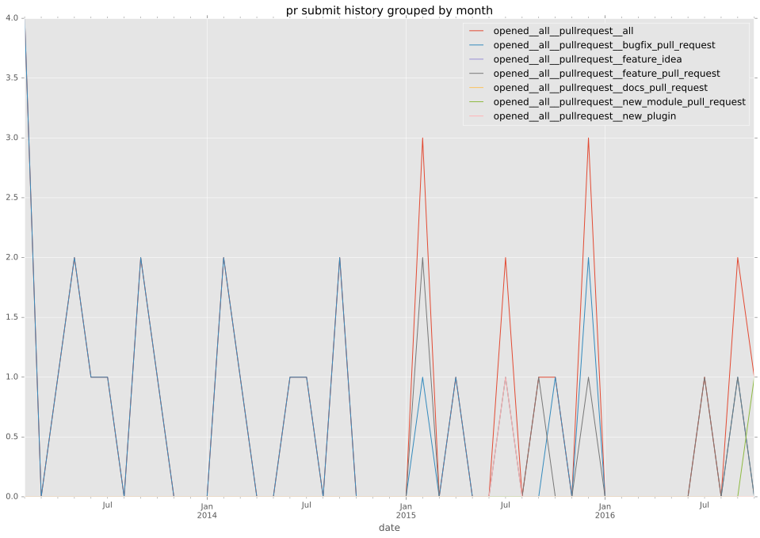

authors
- johanwiren
maintainers
- johanwiren
contributors
- gtirloni : 5 commits
- mpdehaan : 1 commits
- johanwiren : 46 commits
- xen0l : 4 commits
- jpmens : 4 commits
- wishdev : 6 commits
- jctanner : 1 commits
total issue counts
feature pull request: 8
pullrequest: 34
bugfix pull request: 25
feature idea: 4
issue: 10
new plugin: 1
bug report: 6
issue history

pullrequest history

days open by issue type
bugfix pull request
count: 38
std: 29.2934337891
min: 0
max: 109
median: 0.0
mean: 10.9473684211
all
count: 60
std: 67.7272258301
min: 0
max: 374
median: 0.5
mean: 29.35
pullrequest
count: 0
std: nan
min: nan
max: nan
median: nan
mean: nan
feature pull request
count: 13
std: 55.5841934735
min: 0
max: 159
median: 7.0
mean: 32.4615384615
feature idea
count: 3
std: 67.4116706019
min: 0
max: 121
median: 112.0
mean: 77.6666666667
issue
count: 0
std: nan
min: nan
max: nan
median: nan
mean: nan
new plugin
count: 0
std: nan
min: nan
max: nan
median: nan
mean: nan
bug report
count: 6
std: 160.439396658
min: 0
max: 374
median: 30.0
mean: 115.0
closures grouped by total days open